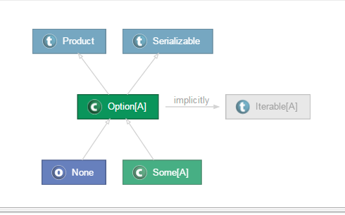

03-Keras之用MNIST数据集训练一个CNN
模型code
|
|
模型运行结果
|
|
|
|
|
|
|
|
|
|
Keras是一个高层神经网络库，Keras由纯Python编写而成并基于Tensorflow或Theano。Keras 为支持快速实验而生，能够把你的idea迅速转换为结果。
Keras的底层库使用Theano或TensorFlow，这两个库也称为Keras的后端。Theano和TensorFlow都是一个“符号主义”的库。
符号主义的计算首先定义各种变量，然后建立一个“计算图”，计算图规定了各个变量之间的计算关系。建立好的计算图需要编译已确定其内部细节，然而，此时的计算图还是一个“空壳子”，里面没有任何实际的数据，只有当你把需要运算的输入放进去后，才能在整个模型中形成数据流，从而形成输出值。
Keras的模型搭建形式就是这种方法，在你搭建Keras模型完毕后，你的模型就是一个空壳子，只有实际生成可调用的函数后（K.function），输入数据，才会形成真正的数据流。
大多数的深度学习框架使用的都是符号计算这一套方法，因为符号计算能够提供关键的计算优化、自动求导等功能。
张量可以看作是向量、矩阵的自然推广，我们用张量来表示广泛的数据类型。
规模最小的张量是0阶张量，即标量，也就是一个数。
当我们把一些数有序的排列起来，就形成了1阶张量，也就是一个向量
如果我们继续把一组向量有序的排列起来，就形成了2阶张量，也就是一个矩阵
把矩阵摞起来，就是3阶张量，我们可以称为一个立方体，具有3个颜色通道的彩色图片就是一个这样的立方体
把矩阵摞起来，好吧这次我们真的没有给它起别名了，就叫4阶张量了，不要去试图想像4阶张量是什么样子，它就是个数学上的概念。
张量的阶数有时候也称为维度，或者轴，轴这个词翻译自英文axis。譬如一个矩阵[[1,2],[3,4]]，是一个2阶张量，有两个维度或轴，沿着第0个轴（为了与python的计数方式一致，本文档维度和轴从0算起）你看到的是[1,2]，[3,4]两个向量，沿着第1个轴你看到的是[1,3]，[2,4]两个向量。
要理解“沿着某个轴”是什么意思，不妨试着运行一下下面的代码：12345678import numpy as npa = np.array([[1,2],[3,4]])sum0 = np.sum(a, axis=0)sum1 = np.sum(a, axis=1)print(sum0) # [4 6]print(sum1) # [3 7]
这是一个无可奈何的问题，在如何表示一组彩色图片的问题上，Theano和TensorFlow发生了分歧，’th’模式，也即Theano模式会把100张RGB三通道的16×32（高为16宽为32）彩色图表示为下面这种形式（100,3,16,32），Caffe采取的也是这种方式。第0个维度是样本维，代表样本的数目，第1个维度是通道维，代表颜色通道数。后面两个就是高和宽了。
而TensorFlow，即’tf’模式的表达形式是（100,16,32,3），即把通道维放在了最后。
Keras默认的数据组织形式在~/.keras/keras.json中规定，可查看该文件的image_dim_ordering一项查看，也可在代码中通过K.image_dim_ordering()函数返回，请在网络的训练和测试中保持维度顺序一致。
Keras的核心数据结构是“模型”，模型是一种组织网络层的方式。Keras中主要的模型是Sequential模型，Sequential是一系列网络层按顺序构成的栈。
在原本的Keras版本中，模型其实有两种:
在现在这版Keras中，图模型被移除，而增加了了“functional model API”。由于functional model API表达的是“一般的模型”这个概念，我们这里将其译为泛型模型，即只要这个东西接收一个或一些张量作为输入，然后输出的也是一个或一些张量，那不管它是什么鬼，统统都称作“模型”。
参数更新的方式方式：
Batch gradient descent，批梯度下降
遍历全部数据集算一次损失函数，然后算函数对各个参数的梯度，更新梯度。这种方法每更新一次参数都要把数据集里的所有样本都看一遍，计算量开销大，计算速度慢，不支持在线学习。
stochastic gradient descent(SGD)，随机梯度下降
每看一个数据就算一下损失函数，然后求梯度更新参数。这个方法速度比较快，但是收敛性能不太好，可能在最优点附近晃来晃去，hit不到最优点。两次参数的更新也有可能互相抵消掉，造成目标函数震荡的比较剧烈。
mini-batch gradient decent，小批的梯度下降
为了克服两种方法的缺点，现在一般采用的是一种折中手段，这种方法把数据分为若干个批，按批来更新参数，这样，一个批中的一组数据共同决定了本次梯度的方向，下降起来就不容易跑偏，减少了随机性。另一方面因为批的样本数与整个数据集相比小了很多，计算量也不是很大。
基本上现在的梯度下降都是基于mini-batch的，所以Keras的模块中经常会出现batch_size，就是指这个。
### Scala类型系统总结
类型 语法类型
类 class Person
特质 trait Closable
元组类型 (T1,T2,T3,…)
函数类型 (T1,T2,t3,…)=>T
参数类型（泛型） class Person[T1,T2,…]
单例类型 this.type
类型投影 Outter#Inner
复合类型 A with B with C…
结构体类型 {def f():Unit ….}
中置类型 T1 A T2
存在类型 T forSome {}
［１］ https://yq.aliyun.com/articles/60370?spm=5176.8251999.569296.24
在Scala中并没有枚举类型，但在标准类库中提供了Enumeration类来产出枚举。扩展Enumeration类后，调用Value方法来初始化枚举中的可能值。
内部类Value实际上是一个抽象类，真正创建的是Val。因为实际上是Val，所以可以为Value传入id和name
如果不指定，id就是在前一个枚举值id上加一，name则是字段名
### scala枚举示例1234567891011121314151617181920212223242526272829303132333435363738object TrafficLightColor extends Enumeration { type TrafficLightColor = Value val Red = Value(0, "Stop") val Yellow = Value(10) val Green = Value("Go")}object Margin extends Enumeration { type Margin = Value val TOP, BOTTOM, LEFT, RIGHT = Value}import test.TrafficLightColor._import test.Margin._object Driver extends App { println(BOTTOM, BOTTOM.id) def doWhat(color: TrafficLightColor) = { if (color == Red) "stop" else if (color == Yellow) "hurry up" else "go" } //使用match匹配 def doWhat2(color: TrafficLightColor) = color match { case Red => "stop" case Yellow => "hurry up" case _ => "go" } // load Red val red = TrafficLightColor(0) // Calls Enumeration.apply println(red, red.id) println(doWhat(red)) println(doWhat2(TrafficLightColor.Yellow)) //打印出所有枚举 Margin.values.foreach { v => println(v,v.id)}}
|
|
定义为协变时父类的处理范围更广泛，而子类的处理范围相对较小；如果定义协变的话，正好与此相反。
类型通配符是指在使用时不具体指定它属于某个类，而是只知道其大致的类型范围，通过”_ <:” 达到类型通配的目的，如下面的代码12345678910111213141516171819class Person(val name:String){ override def toString()=name}class Student(name:String) extends Person(name)class Teacher(name:String) extends Person(name)class Pair[T](val first:T,val second:T){ override def toString()="first:"+first+" second: "+second;}object TypeWildcard extends App { //Pair的类型参数限定为[_<:Person]，即输入的类为Person及其子类 //类型通配符和一般的泛型定义不一样，泛型在类定义时使用，而类型能配符号在使用类时使用 def makeFriends(p:Pair[_<:Person])={ println(p.first +" is making friend with "+ p.second) } makeFriends(new Pair(new Student("john"),new Teacher("摇摆少年梦")))}
[1]https://yq.aliyun.com/articles/60373?spm=5176.8251999.569296.21
|
|
上述scala代码展示了如何使用scala中的模式匹配，它的实现方式是通过match关键字与 case X=>的方式实现的，其中case _表示除了 case 10,case 50,case 80的其余匹配，类似于java中的default。但scala语言中提供了更为灵活的匹配方式，如：
|
|
case语言中还可以加相应的表达式，例如：12345678910111213141516object PatternMatching extends App{ var list=new ArrayBuffer[Int]() var x=0 for(i<- 1 to 100){ i match { //后面可以跟表达式 case 10 => x=10 case 50 => println(50) case 80 => println(80) case _ if(i%4==0)=> list.append(i) case _ if(i%3==0)=> println(i+":能被3整除") case _ => } } println(x)}
Case Class一般被翻译成样例类，它是一种特殊的类，能够被优化以用于模式匹配，下面的代码定义了一个样例类：12345678910111213141516171819202122//抽象类Personabstract class Person//case class Studentcase class Student(name:String,age:Int,studentNo:Int) extends Person//case class Teachercase class Teacher(name:String,age:Int,teacherNo:Int) extends Person//case class Nobodycase class Nobody(name:String) extends Personobject CaseClassDemo{ def main(args: Array[String]): Unit = { //case class 会自动生成apply方法，从而省去new操作 val p:Person=Student("john",18,1024) //match case 匹配语法 p match { case Student(name,age,studentNo)=>println(name+":"+age+":"+studentNo) case Teacher(name,age,teacherNo)=>println(name+":"+age+":"+teacherNo) case Nobody(name)=>println(name) } }}
当一个类被声名为case class的时候，scala会帮助我们做下面几件事情：
1 构造器中的参数如果不被声明为var的话，它默认的话是val类型的，但一般不推荐将构造器中的参数声明为var
2 自动创建伴生对象，同时在里面给我们实现子apply方法，使得我们在使用的时候可以不直接显示地new对象
3 伴生对象中同样会帮我们实现unapply方法，从而可以将case class应用于模式匹配，关于unapply方法我们在后面的“提取器”那一节会重点讲解
4 实现自己的toString、hashCode、copy、equals方法
除此之此，case class与其它普通的scala类没有区别
下面给出case class Student字节码文件内容，以验证我们上述所讲的内容:12345678910111213141516171819202122232425262728293031323334353637383940414243444546474849//下面的代码是自动生成的伴生对象中的字节码内容D:\ScalaWorkspace\ScalaChapter13\bin\cn\scala\xtwy>javap -private Student$.classCompiled from "CaseClass.scala"public final class cn.scala.xtwy.Student$ extends scala.runtime.AbstractFunction3<java.lang.String, java.lang.Object, java.lang.Object, cn.scala.xtwy.Student> implements scala.Serializable { public static final cn.scala.xtwy.Student$ MODULE$; public static {}; public final java.lang.String toString(); public cn.scala.xtwy.Student apply(java.lang.String, int, int); public scala.Option<scala.Tuple3<java.lang.String, java.lang.Object, java.lang.Object>> unapply(cn.scala.xtwy.Student); private java.lang.Object readResolve(); public java.lang.Object apply(java.lang.Object, java.lang.Object, java.lang.Object); private cn.scala.xtwy.Student$();}//下面的代码是Student类自身的字节码内容D:\ScalaWorkspace\ScalaChapter13\bin\cn\scala\xtwy>javap -private Student.classCompiled from "CaseClass.scala"public class cn.scala.xtwy.Student extends cn.scala.xtwy.Person implements scala.Product,scala.Serializable { private final java.lang.String name; private final int age; private final int studentNo; public static scala.Function1<scala.Tuple3<java.lang.String, java.lang.Object, java.lang.Object>, cn.scala.xtwy.Student> tupled(); public static scala.Function1<java.lang.String, scala.Function1<java.lang.Object, scala.Function1<java.lang.Object, cn.scala.xtwy.Student>>> curried(); public java.lang.String name(); public int age(); public int studentNo(); public cn.scala.xtwy.Student copy(java.lang.String, int, int); public java.lang.String copy$default$1(); public int copy$default$2(); public int copy$default$3(); public java.lang.String productPrefix(); public int productArity(); public java.lang.Object productElement(int); public scala.collection.Iterator<java.lang.Object> productIterator(); public boolean canEqual(java.lang.Object); public int hashCode(); public java.lang.String toString(); public boolean equals(java.lang.Object); public cn.scala.xtwy.Student(java.lang.String, int, int);}
###3. case class应用实战
前面我们提到，定义case class便会自动生成对应的toString,hashCode,equals,copy等方法，123456789101112131415161718192021222324252627282930313233343536//toString方法演示scala> val s=Teacher("john",38,1024)s: Teacher = Teacher(john,38,1024)//无参copy方法演示scala> val s1=s.copy()s1: Teacher = Teacher(john,38,1024)//copy方法是深度拷贝scala> println(s eq s1)false//equal方法根据对象内容进行比较scala> println(s equals s1)truescala> println(s == s1)true//hashcode方法scala> s1.hashCoderes45: Int = 567742485//toString方法scala> s1.toStringres46: String = Teacher(john,38,1024)//带一个参数的copy方法scala> s1.copy(name="stephen")res47: Teacher = Teacher(stephen,38,1024)//带二个参数的copy方法scala> s1.copy(name="stephen",age=58)res49: Teacher = Teacher(stephen,58,1024)//带三个参数的copy方法scala> s1.copy(name="stephen",age=58,teacherNo=2015)res50: Teacher = Teacher(stephen,58,2015)
|
|
在进行模式匹配的时候，有些时候需要确保所有的可能情况都被列出，此时常常会将case class的超类定义为sealed（密封的) case class，如：
|
|
编译器给出的提示可以通过下列语句进行消除，1234567//下面的语句达到了sealed class的要求 val s:Person=Student("john",18,1024) s match{ case Student(name,age,studentNo)=>println("Student") case Teacher(name,age,studentNo)=>println("Teacher") case Nobody(name)=>println("Nobody") }
某个类一旦被定义为case class，则编译器会自动生成该类的伴生对象，伴生对象中包括了apply方法及unapply方法，apply方法使得我们可以不需要new关键字就可以创建对象，而unapply方法，则使得可以方便地应用在模式匹配当中，另外编译器还自动地帮我们实现对应的toString、equals、copy等方法。在实际中，case class除了在模式匹配时能发挥其强大的威力之外，在进行其它应用时，也显示出了其强大的功能，下面给出case class在SparkSQL中的应用，旨在说明case class在实际应用中的重要地位。
|
|
|
|
|
|
序列模式指的是像Array、List这样的序列集合进行模式匹配
|
|
|
|
|
|
上述代码如果不用模式匹配的话，要实现相同的功能，可以通过下列代码实现：
|
|
|
|
|
|
正则表达式中的模式匹配：123456789101112object RegexMatch { def main(args: Array[String]): Unit = { val ipRegex="(\\d+)\\.(\\d+)\\.(\\d+)\\.(\\d+)".r for(ipRegex(one,two,three,four) <- ipRegex.findAllIn("192.168.1.1")) { println("IP子段1:"+one) println("IP子段2:"+two) println("IP子段3:"+three) println("IP子段4:"+four) } }}
###5. Option类型模式匹配
在前面的课程内容中，我们曾经提到过Option类型，Option类型有两个子类，分别是Some和None（单例对象），本小节将从模式匹配的角度对Option类进行重新思考。
下面给出的是Option类在scala语言中的类层次结构：

这里写代码片
Option类其实是一个sealed class
//Option类的部分源码
sealed abstract class Option[+A] extends Product with Serializable {
self =>
/* Returns true if the option is $none, false otherwise.
/
def isEmpty: Boolean
/* Returns true if the option is an instance of $some, false otherwise.
/
def isDefined: Boolean = !isEmpty
下面给出的分别是Some及None的源码：
/** Class Some[A] represents existing values of type
A./* This case object represents non-existent values.
object OptionDemo extends App{
val m=Map(“hive”->2,”spark”->3,”Spark MLlib”->4)
def mapPattern(t:String)=m.get(t) match {
case Some(x) => println(x);x
case None => println(“None”);-1
}
println(mapPattern(“Hive”))
}
//输出结果为：
//None
//-1
前面我们看到：None是一个case object，它同Some一样都extends Option类，只不过Some是case class，对于case class我们已经很熟悉了，那case object它又是怎么样的呢？假设我们定义了以下类：
//下面的类主要用于模拟Option,Some,None三个类或对象之间的关系
sealed abstract class A
case class B(name:String,age:Int) extends A
case object CaseObject extends A{
}
上述代码编译后，生成的字节码文件如下：
D:\ScalaWorkspace\ScalaChapter15\bin\cn\scala\xtwy 的目录
2015/08/01 21:26
class A的反编译后的代码如下：
D:\ScalaWorkspace\ScalaChapter15\bin\cn\scala\xtwy>javap -private A.class
Compiled from “CaseObject.scala”
public abstract class cn.scala.xtwy.A {
public cn.scala.xtwy.A();
}
case class B对应的字节码文件反编译后如下：
D:\ScalaWorkspace\ScalaChapter15\bin\cn\scala\xtwy>javap -private B.class
Compiled from “CaseObject.scala”
public class cn.scala.xtwy.B extends cn.scala.xtwy.A implements scala.Product,sc
ala.Serializable {
private final java.lang.String name;
private final int age;
public static scala.Function1
, cn.scala.xtwy.B> tupled();
public static scala.Function1
public java.lang.String name();
public int age();
public cn.scala.xtwy.B copy(java.lang.String, int);
public java.lang.String copy$default$1();
public int copy$default$2();
public java.lang.String productPrefix();
public int productArity();
public java.lang.Object productElement(int);
public scala.collection.Iterator
public boolean canEqual(java.lang.Object);
public int hashCode();
public java.lang.String toString();
public boolean equals(java.lang.Object);
public cn.scala.xtwy.B(java.lang.String, int);
}
//自动生成的伴生对像类
public final class cn.scala.xtwy.B$ extends scala.runtime.AbstractFunction2
public static final cn.scala.xtwy.B$ MODULE$;
public static {};
public final java.lang.String toString();
public cn.scala.xtwy.B apply(java.lang.String, int);
public scala.Option
cn.scala.xtwy.B);
private java.lang.Object readResolve();
public java.lang.Object apply(java.lang.Object, java.lang.Object);
private cn.scala.xtwy.B$();
}
case object CaseObject对应的反编译后的内容：
D:\ScalaWorkspace\ScalaChapter15\bin\cn\scala\xtwy>javap -private CaseObject.cla
ss
Compiled from “CaseObject.scala”
public final class cn.scala.xtwy.CaseObject {
public static java.lang.String toString();
public static int hashCode();
public static boolean canEqual(java.lang.Object);
public static scala.collection.Iterator
public static java.lang.Object productElement(int);
public static int productArity();
public static java.lang.String productPrefix();
}
D:\ScalaWorkspace\ScalaChapter15\bin\cn\scala\xtwy>javap -private CaseObject$.cl
ass
Compiled from “CaseObject.scala”
public final class cn.scala.xtwy.CaseObject$ extends cn.scala.xtwy.A implements
scala.Product,scala.Serializable {
public static final cn.scala.xtwy.CaseObject$ MODULE$;
public static {};
public java.lang.String productPrefix();
public int productArity();
public java.lang.Object productElement(int);
public scala.collection.Iterator
public boolean canEqual(java.lang.Object);
public int hashCode();
public java.lang.String toString();
private java.lang.Object readResolve();
private cn.scala.xtwy.CaseObject$();
}
对比上述代码不难看出，case object与case class所不同的是，case object对应反编译后的CaseObject$.cl
ass中不存在apply、unapply方法，这是因为None不需要创建对象及进行内容提取，从这个角度讲，它被定义为case object是十分合理的。
Python具有丰富的第三方库，而且绝大部分都是开源的。利用好第三方库，能避免重复造轮子，加速开发。
Python第三方库几乎都可以在github或者 pypi上找到源码。源码包格式大概有zip 、 tar.zip、 tar.bz2。解压这些包，进入解压好的文件夹，通常会有一个setup.py的文件。打开命令行，进入该文件夹。运行以下命令，就能把这个第三库安装到系统里：1python setup.py install
或者借助pip，则不需要解压:pip install package.zip
现在很多编程语言，都带有包管理器，例如 Ruby 的 gem，nodejs的npm。
在Python中，安装第三方模块，是通过setuptools这个工具完成的。Python有两个封装了setuptools的包管理工具：easy_install和pip。目前官方推荐使用pip。
用easy_install和pip来安装第三方库很方便
它们的原理其实就是从Python的官方源pypi.python.org/pypi 下载到本地，然后解包安装。
基本操作命令如下：1234567891011121314# 安装packagepip install packagename# 卸载packagepip uninstall packagename# 查看所安装的packagepip list# 将项目依赖的库重定向输出到文件，cd到项目根目录pip projectname > requirements.txt# 他人安装项目的依赖库pip install -r requirements.txt
pip常用命令可通过在命令行输入pip -h查看pip command -h可查看该命令的使用方法
|
|
解决方法1：
采用源码安装方式，在github或其他库下载，用python setup.py install方式安装，详见上文【源码安装】
解决方法2：
手动指定源,在pip后面跟-i,命令如下：1pip install packagename -i http://pypi.douban.com/simple --trusted-host pypi.douban.com
pipy国内镜像目前有：
豆瓣 http://pypi.douban.com/simple/
阿里云 http://mirrors.aliyun.com/pypi/simple/
中国科技大学 https://pypi.mirrors.ustc.edu.cn/simple/
清华大学 https://pypi.tuna.tsinghua.edu.cn/simple/
华中理工大学 http://pypi.hustunique.com/
山东理工大学 http://pypi.sdutlinux.org/
参看setuptools、pip版本是否一致，升级到最新版本12pip install setuptools -Upip install pip -U
原因大概是 windows上缺少一些C编译器。
解决方法1：
安装VC或VS，该方法有时奏效，有时不奏效。
解决方法2：
更简单的解决方法：下载whl格式的package，再用pip安装。
以numpy包为例：123whl格式的下载地址：http://www.lfd.uci.edu/~gohlke/pythonlibs/# 输入whl文件所在的完整路径pip install D:\python\numpy-1.9.2+mkl-cp33-none-win_amd64.whl
Welcome to Hexo! This is your very first post. Check documentation for more info. If you get any problems when using Hexo, you can find the answer in troubleshooting or you can ask me on GitHub.
|
|
More info: Writing
|
|
More info: Server
|
|
More info: Generating
|
|
More info: Deployment